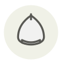

Châtaigne japonaise (kuri) ✦
Japanese chestnut
| Nom latin | Castanea crenata |
|---|---|
| Famille | Noix & graines |
| Origine | Japon & Corée |
| Saison | septembre – octobre |
| Goût | Terreux · Doux · Grillé |
| Prix courant | 15–30 €/kg |
Ce que c’est
Castanea crenata résiste naturellement au chancre qui a effacé le châtaignier américain, et ses gènes nourrissent depuis un siècle les hybrides de restauration. En cuisine c’est la châtaigne la plus rétive : la peau intérieure, le shibukawa, adhère à la chair au lieu de s’écailler, et le shibukawa-ni, le plat qui la conserve, demande trois jours de cuissons et de changements d’eau avant que le tanin cède.
En cuisine
Faites-les tremper une nuit avant de les éplucher : la coque se détache alors d’un seul tenant, ce qu’elle ne fait jamais à sec. Pour le shibukawa-ni, cuisez à l’eau avec une cuillerée à café de bicarbonate par litre et changez l’eau trois fois avant tout sucre ; ajouté trop tôt, le sucre fixe le tanin.
S’accorde avec
Riz Patate douce Sauce soja Sucre blanc Mirin (hon-mirin) Sésame noir Kombu
Même espèce
Châtaigne Crème de marrons Farine de châtaigne Miel de châtaignier
De saison en même temps
Tile du Japon (amadai) Laccaire améthyste Arbouse Bolet bai Biche Bintje
Une erreur ici, ou un oubli ? Dites-le nous